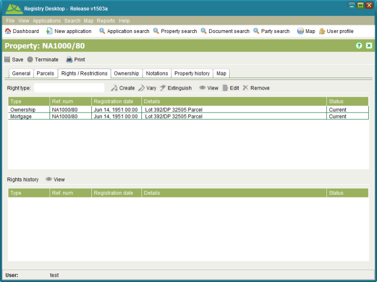

The Rights and Restrictions (RRR) tab shows summary information for all current and pending
(i.e. unregistered) rights and restrictions on the property. You can access further
information about a specific right or restriction by selecting the RRR from the list and
clicking the View
toolbar button. The RRR details screen displayed will be dependent on the RRR you selected,
however it should contain detailed information about the RRR as well as any supporting
documentation that was linked to the RRR when it was first recorded.
View
toolbar button. The RRR details screen displayed will be dependent on the RRR you selected,
however it should contain detailed information about the RRR as well as any supporting
documentation that was linked to the RRR when it was first recorded.

Rights and Restrictions tab
This tab also displays the Rights history for the property in the bottom section of the tab.
You can select and View the historic rights details as required.
View the historic rights details as required.
The other toolbar items available on this tab allow you to create, vary (modify) or
extinguish (cancel) RRR. To use these toolbar items you must first lodge an application with
one or more Registration Services. When you Start a Registration Service from the Application Details
Services tab, it configures the Property Details screen enabling or disabling the RRR toolbar
items relevant for that service.
Start a Registration Service from the Application Details
Services tab, it configures the Property Details screen enabling or disabling the RRR toolbar
items relevant for that service.